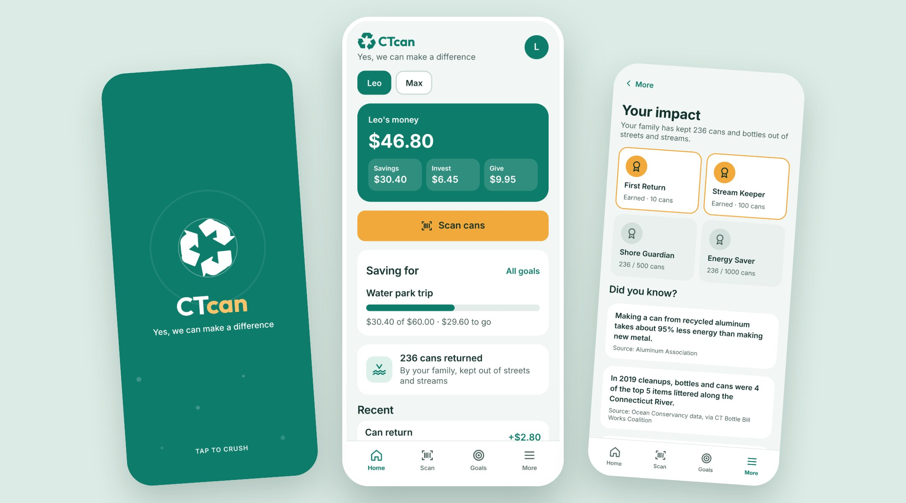
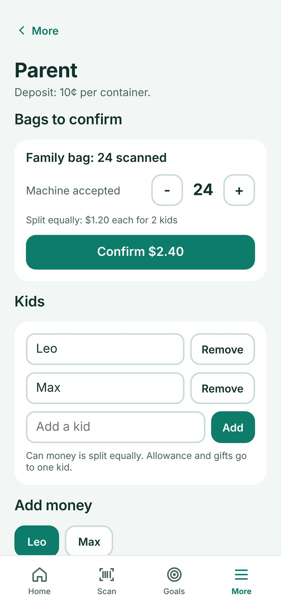
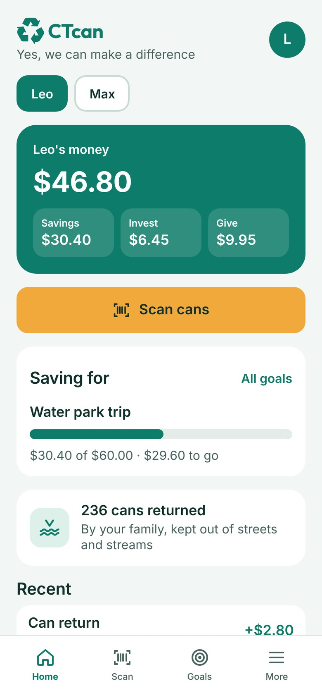

CTcan turns Connecticut's 10¢ bottle deposit into a kid's first real paycheck. Kids scan the cans they collect, a parent confirms what the machine accepted, and the money splits into saving, investing and giving, with goals to save toward and badges for what the family kept out of the river. I designed and built it for my own kids.

Since Connecticut raised its bottle deposit to 10 cents, a bag of cans is worth real money. My sons are starting a can and bottle pickup in our town, and they care about wildlife, so the work means something to them. But the money from a return usually ends up as loose change, and the lesson goes with it.
Kids' money apps already split allowance into saving, giving and investing. None of them start from the work itself: the cans you collected, the ones the machine turned down, and what returning them did for the streams and beaches nearby.
My first idea was to scan every can and warn kids about the ones that wouldn't count. So I read Connecticut's bottle law first: which drinks and sizes are covered, the "CT" marking every container must carry, and the newer rule that redemption centers must reject cans that weren't sold in the state.
The barcodes the machines check against are registered with the machine companies, not published by the state, so an app can't know for sure what a machine will accept. It can guess, but only the machine knows. That one finding shaped the whole design.
Scanning became a counter instead of a judge. Each can adds one, the total climbs, and the screen shows what the bag could be worth. It's quick enough to stay fun for a big bag.
After the return, a parent enters how many cans the machine accepted. If the kid scanned 24 and the machine took 22, the app pays for 22 and says so. Expecting one amount and being paid another is a real lesson about money, so I kept it visible instead of hiding it.
Siblings don't sort cans into separate bags, so the app doesn't ask them to. A household has one counter, and everyone scans into the same bag.
When a parent confirms the return, the money splits equally between the kids, and any leftover cent goes to the first kid in the list so the totals always add up. Parents add, rename or remove kids at any time, and removing a kid never lowers the family's can count. Allowance and gifts still go to one kid at a time.
Money a kid earned and money they were given aren't the same, so each source gets its own split. A parent picks Saver, Balanced or Giver for cans, allowance and gifts. A birthday gift from Grandma can go mostly to savings while can money spreads more evenly.
Savings fill the kid's goals in order. A goal can be something from Amazon, with the link pasted in, or something a parent sets, like a trip to the water park.

ParentConfirm bags, manage kids, add moneyMy kids care about birds and wildlife, and it was tempting to say "you saved 3 birds." Nobody can measure that per can, so the app doesn't claim it. The number it shows is what the family actually did: cans kept out of streets and streams.
Next to it are short facts, each with its source, like how much less energy a recycled can takes and how often bottles and cans turn up along the Connecticut River. Badges arrive at 10, 100, 500 and 1,000 cans, named for the places they help.

KidsThe can count on every home screenHolding kids' money, or investing it for them, means banking partners and a lot of rules. For a first version that would have buried the idea, so the parent keeps the cash and CTcan keeps the record: what came in, where it was split, and what each kid is saving for.
The deposit amount is a setting, not a fixed number. In 2026 Connecticut lawmakers proposed a bill that could cut the deposit back to 5 cents, and the app shouldn't break if the law changes.
I used Claude to research Connecticut's bottle law and the kids' money apps already out there, and to build the prototype from my decisions as we talked them through.
Every number in the app was checked against its source before it went in. Some didn't survive: a cleanup total that covered four states rather than Connecticut, and a figure I couldn't trace at all. Those stayed out, because an app that teaches kids about honesty with money should be honest with its facts too.
I designed the screens first as a clickable prototype, then rebuilt them as a standalone web app that runs on any phone, with the brand font built in so it looks the same everywhere. It's deployed on Vercel.
The animations on this page are recordings of the working app, driven by scripts that scan, confirm and add goals the same way a family would.
The next step is testing it with my own kids on real returns: accounts that keep each family's data, and a parent PIN so kids can't confirm their own bags.
After that, a camera check that reads the "CT" marking and gently flags milk jugs and wine bottles before they go in the bag.
CTcan makes the work behind a dime visible: what you collected, what was actually paid, how it was shared, what it's saving toward, and what it did for the river.
It also reflects how I design: learn the real rules first, let them decide what the product can honestly promise, then make that simple enough for a kid.
I design and build products for real businesses, from the first conversation to working software.
Get in touch